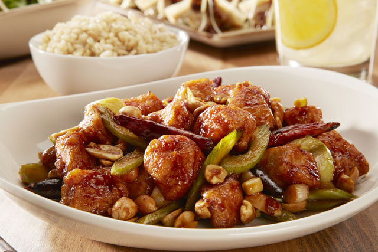
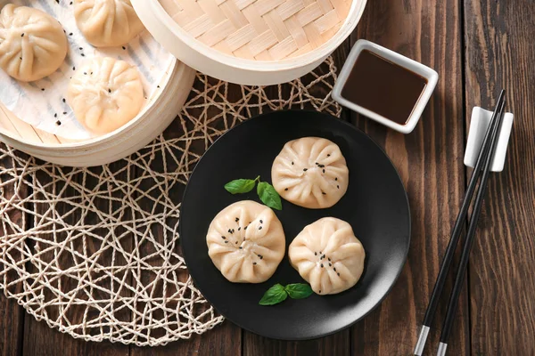

A culinária chinesa é reconhecida mundialmente pela sua complexidade, equilibrio de sabores (doce, salgado, picante) e texturas (macio, crocante), refletindo o conceito de Yin e Yang.
Pato à Pequim (北京烤鸭)
Característico pela pele crocante e carne macia, o pato a Pequim é feito a partir de uma marinada com açúcar, sal, vinho e gengibre, além de especiarias chinesas.
Isso cria uma crosta na pele da ave, enquanto deixa a carne interior suculenta e saborosa.
Frango Kung Pao (宮保雞丁)
O frango kung pao (frango xadrez) é um prato picante típico da culinária chinesa feito com frango, amendoins, vegetais e pimentas secas. É cozido em um molho que combina shoyu, vinagre de arroz, açúcar e amido de milho.

Mapo Tofu (麻婆豆腐)
O mapo tofu é um prato típico da culinária chinesa ótimo para quem gosta de comida mais picante. Ele é produzido com um molho espesso à base de pasta de feijão fermentado,pimenta de Sichuan e carne moída (geralmente de porco).
Porco Agridoce com Lombo (糖醋裡肌)
O porco agridoce é um dos pratos mais populares da culinária chinesa. Ele é feito com pedaços de porco empanados e fritos com um molho a base de ketchup, vinagre, açúcar e molho de soja. Os acompanhamentos geralmente incluem frutas, como abacaxi ou maçã, além de pimentão e cebola.
Baozi (包子)
Muito simples e popular, os baozi são pãezinhos recheados com massa levemente agridoce. Eles são geralmente feitos com carne de porco, vegetais, camarões ou pastas doces, como a de feijão-doce. Também podem ser usados como sobremesas ou lanches rápidos na culinária chinesa.

Curiosidades
Equilíbrio e Cores: Pratos buscam harmonia entre sabores (doce, salgado, azedo) e cores vibrantes, com vegetais contrastantes.
Yin e Yang na Comida: Mistura de quente/frio, doce/salgado para equilibrar a energia dos alimentos.
(Hashis): Um item essencial, com regras como não espetar no arroz (oferenda funerária) e comer o que está à frente.
Foco Nutricional: Muitas receitas incorporam ervas e ingredientes da medicina tradicional chinesa para saúde.